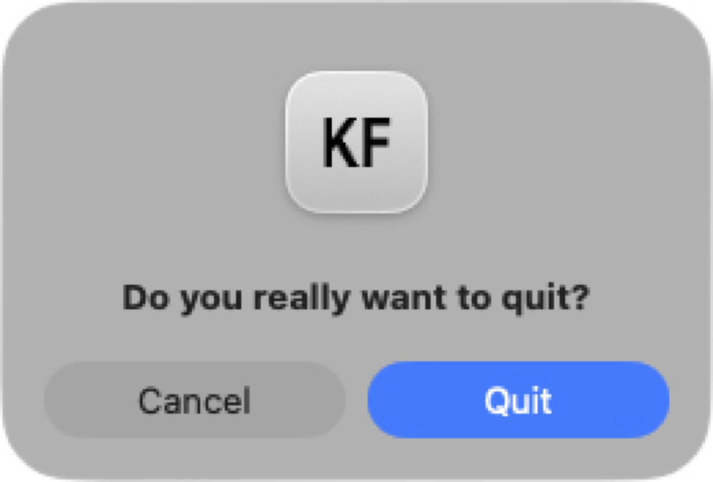

Declan Getting Started
Initial install¤
- grab the kymflow.app.zip off box
- grab the declan-stall-v1.zip off box
- uncompress both files
Always work locally, DO NOT work on files that are on box.
We will be working in the raw data folder you just unzipped, declan-stall-v1/.
All your work will be saved into declan-stall-v1/. You can then zip the entire folder and put it back on box for me to analyze the results. Important when putting the new declan-stall-v1.zip on box, be sure to put it into a new folder, do not replace the original declan-stall-v1.zip on box.
Now that you have a local copy of declan-stall-v1/. Run the KymFlow app ...
First time run of KymFlow app¤

The first time you run the kymflow app you need to do this.
- Option + Right-click (or Control + Click) on KymFlow.app and select 'Open' from the context menu
This gets you around the initial warning of "KymFlow.app Not opened".
If you have any problems with this, email and I will get back asap. This is a one time 'first run' thing. Next time you open (double-click), this is not needed.
Once the KymFlow app is running ...¤
Click 'open csv', find you local declan-stall-v1/ folder and open the provided declan-random-v1.csv
This will populate KymFlow with 50 files for scoring.
We are loading and analyzing a random subset of tif files specified in declan-random-v1.csv
You need to use 'Open CSV' and then insure you are looking at a list of 50 tif files.
The main window will look like this:

On top is a table/list of all tif files.¤
Single click a file will:
- Display the kym image (gray)
- Display its radon velocity analysis (red)
- Populate the 'kym events'. In this example there are two 'kym events' shown in the lower table
To add your own User Added events that will represent a stall:¤
- Zoom in on the kymograph/velocity plot (mouse click + drag)
- Click 'Add Event' -> select the start/stop time of the event visually (again with a click+drag in the kymograph/velocity plot)
- You will then see your new 'User Event' in the event list. User events are displayed in the velocity plot as yellow rectangles.
- The evnts you add will have
Type'User Added' - You can further classify your 'User Added' events by a double-click on 'User Type' and select from: unreviewed, true_stall, reversal, other.

Some GUI niceties¤
- Keyboard
enterwill always set the view to full scale. You can also double-click on the plot to set full scale. - When you are zoomed in, use the '<' and '>' buttons to scroll throught the kymograph.
Blind analysis¤
To turn on blind analysis. Go to the options toolbar, by clicking the gear icon in the left toolbar. Click on the 'Blinded Analysis' checkbox.
Important. Blinded analysis is a honesty contract. The gui will in general blind your analysis by not showing filenames, dates, treatments, conditions, etc. There are plenty of ways around it. Be honest!!!
Always save your work¤
As you add user events, the top table of files will show which have been edited with a red X.
Save all your work with 'Save All' button.
When you quit KymFlow, you will see a warning "Do you really want to quit?".
If you still need to save, click Cancel, save your work, and then quit again.

What is next¤
This is just the first step.
Score all 50 files in declan-stall-v1/ declan-random-v1.csv. Zip the declan-stall-v1/ and put the zip into a new folder on box.
I have scripts to test the null hypothesis, 'number of stalls is significantly different between condiitons`.
This little tutorial is really the beginning of a lot of fun with GUIs. There is a ton more but I will leave it at that for now.